All Projects
Anomaly Detection and Correction System for Automated Manual Transmission (AMT) Using Power BI
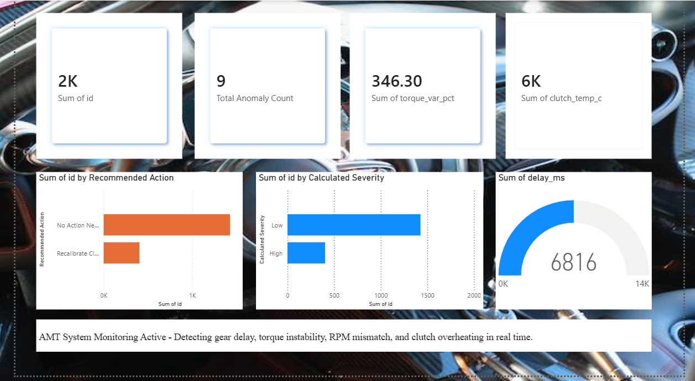
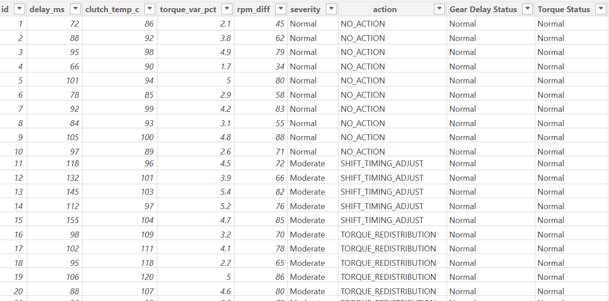
Developed an intelligent anomaly detection and monitoring dashboard for Automated Manual Transmission (AMT) systems using Power BI Desktop. The system analyzes real-time transmission parameters including gear engagement delay, clutch temperature, torque variance, and RPM differences to identify operational anomalies. The solution applies rule-based logic to classify system behavior into severity levels (Low, Medium, High) and provides automated corrective action recommendations such as gear shift adjustment, clutch recalibration, torque redistribution, and RPM synchronization. An interactive dashboard was designed to visualize anomaly trends, severity distribution, and system performance, enabling quick decision-making and improved transmission reliability.
The solution applies rule-based logic to classify system behavior into severity levels (Low, Medium, High) and provides automated corrective action recommendations such as gear shift adjustment, clutch recalibration, torque redistribution, and RPM synchronization.
An interactive dashboard was designed to visualize anomaly trends, severity distribution, and system performance, enabling quick decision-making and improved transmission reliability.
Technologies Used: Microsoft Power BI Desktop,Power Query (data cleaning & transformation).DAX (calculated columns & measures), Data visualization & dashboard design
Outcome: This project demonstrates how data analytics can be applied in automotive systems to improve reliability, reduce mechanical wear, and support decision-making through intelligent monitoring and visualization.
INKIND – Child Emotion Prediction from Drawings
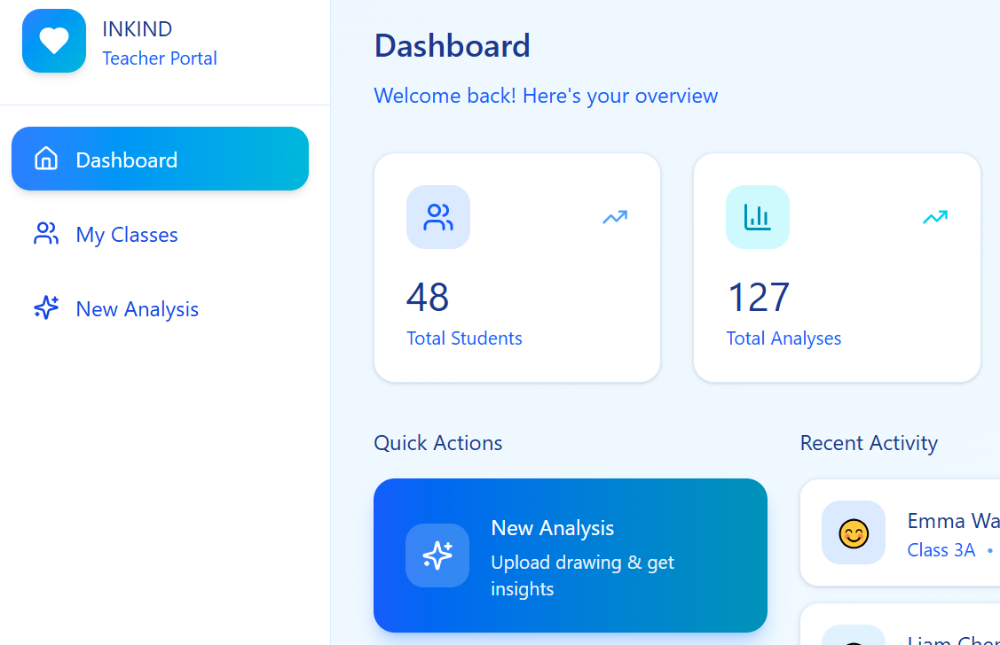
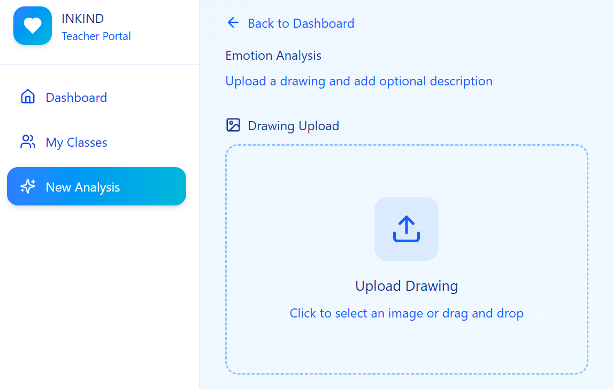
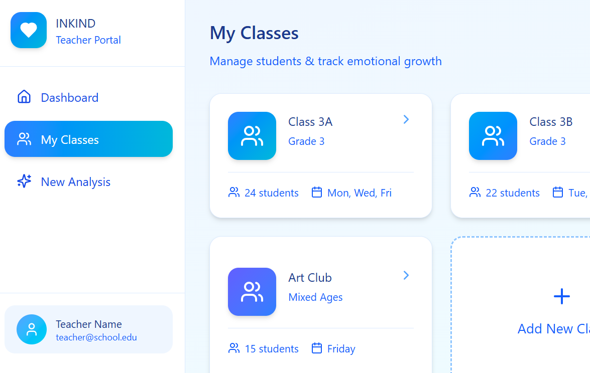
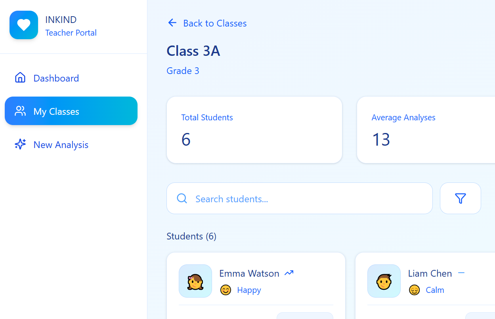
INKIND is an AI-powered web application designed to analyze children's drawings and predict their emotional states. The system helps educators and caregivers gain insights into children's emotions by using deep learning models to interpret visual features in drawings.
The application allows teachers to upload children's drawings and receive an automated analysis of possible emotions such as happiness, calmness, anxiety, or sadness. This helps identify emotional patterns early and supports better understanding of children's psychological well-being. The platform includes an interactive dashboard where teachers can manage classes, track students, and view analysis results. The system uses a machine learning model trained on drawing data to classify emotional cues and present them in an easy-to-understand format through visual indicators and emotion probability scores.
The frontend of the application is developed using Streamlit, providing a simple and responsive interface for uploading drawings, managing classroom data, and viewing emotional analysis results. The backend integrates deep learning models built with modern machine learning frameworks to perform emotion classification.
Technologies Used: Python, Deep Learning, Streamlit
Outcome: Built a platform where teachers can upload drawings and receive emotion analysis with visual indicators and probability scores.
Customer Churn Prediction using Machine Learning
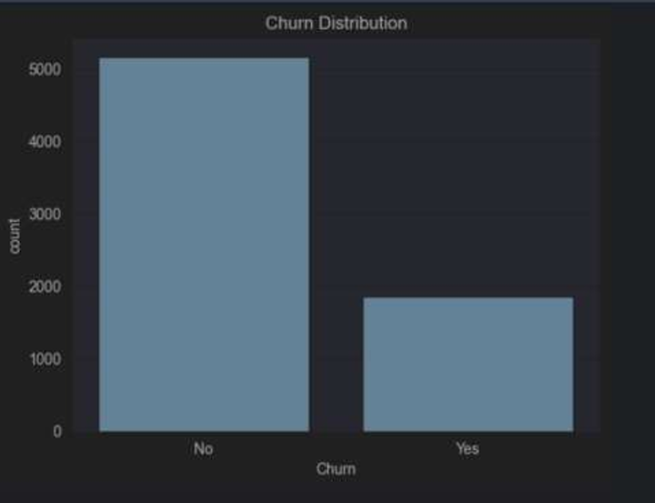
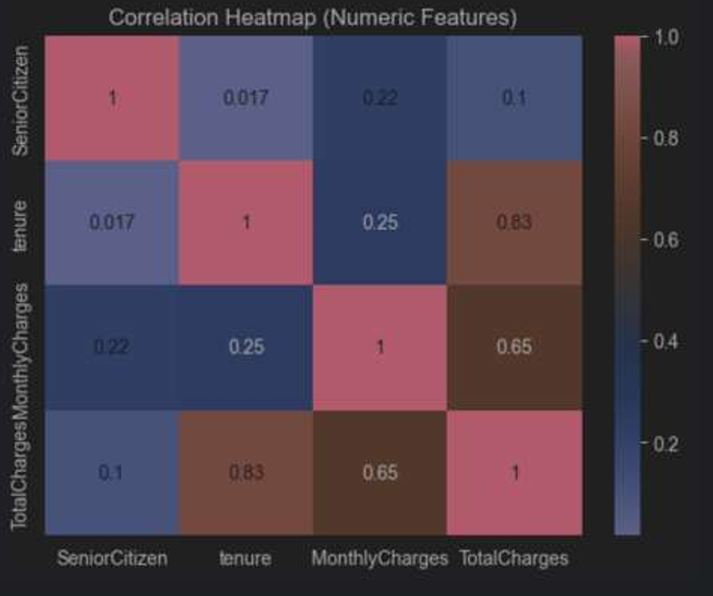
Developed a machine learning model to predict customer churn in the telecommunications industry using a real-world dataset. The project involved data preprocessing, feature engineering, and exploratory data analysis to identify patterns related to customer behavior. Two supervised learning models, a Decision Tree and a Neural Network, were implemented and compared to evaluate their predictive performance. Model effectiveness was assessed using standard machine learning metrics such as accuracy, precision, recall, and F1-score.
Technologies Used: Python, Pandas, Scikit-learn
Outcome: Built predictive models to identify potential customer churn and demonstrate data-driven decision making for improving customer retention strategies.
Dementia Risk Prediction System Using Machine Learning
Developed a machine learning-based web application to predict dementia risk using clinical and cognitive indicators from a healthcare dataset. The project involved comprehensive data preprocessing, feature scaling, and exploratory data analysis to identify patterns related to cognitive decline. A Random Forest classifier was trained and evaluated to predict dementia risk, and the model’s performance was assessed using standard machine learning evaluation metrics such as accuracy, confusion matrix, and classification report. To improve transparency and interpretability, SHAP-based model explainability was implemented to highlight the key factors influencing predictions. The system was deployed through an interactive Streamlit web application that allows users to input data and receive real-time dementia risk predictions.
Technologies Used: Python, Pandas, Scikit-learn, Streamlit, Matplotlib, Seaborn
Outcome: Developed an interactive ML system capable of predicting dementia risk and providing explainable insights using SHAP-based model interpretability.
Healthcare ETL Pipeline – AWS Cloud
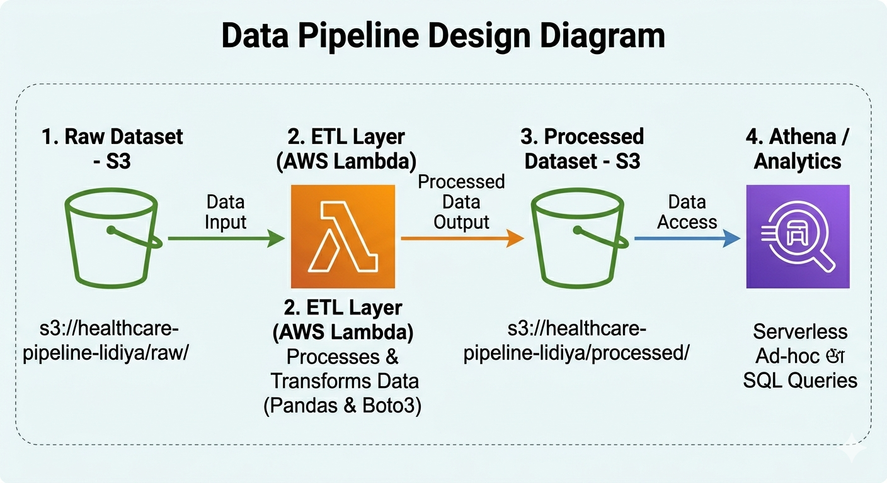
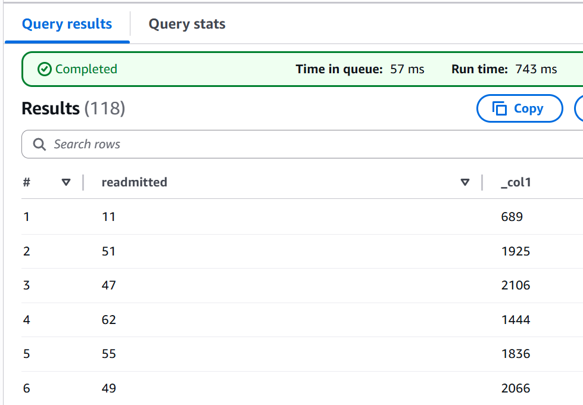
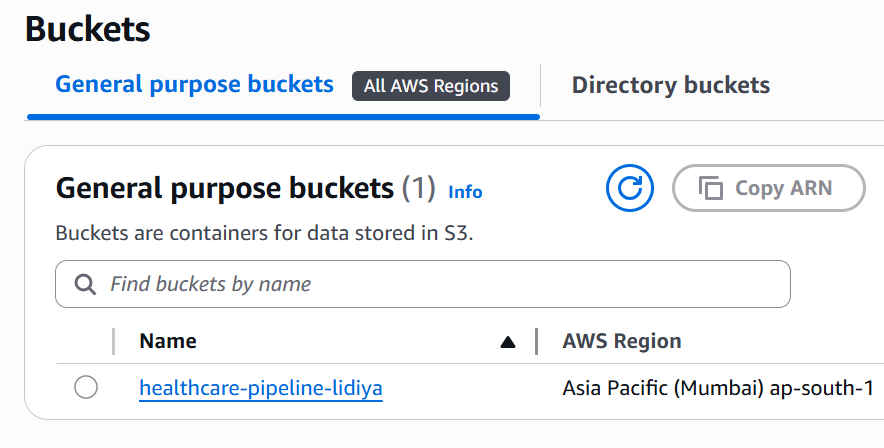
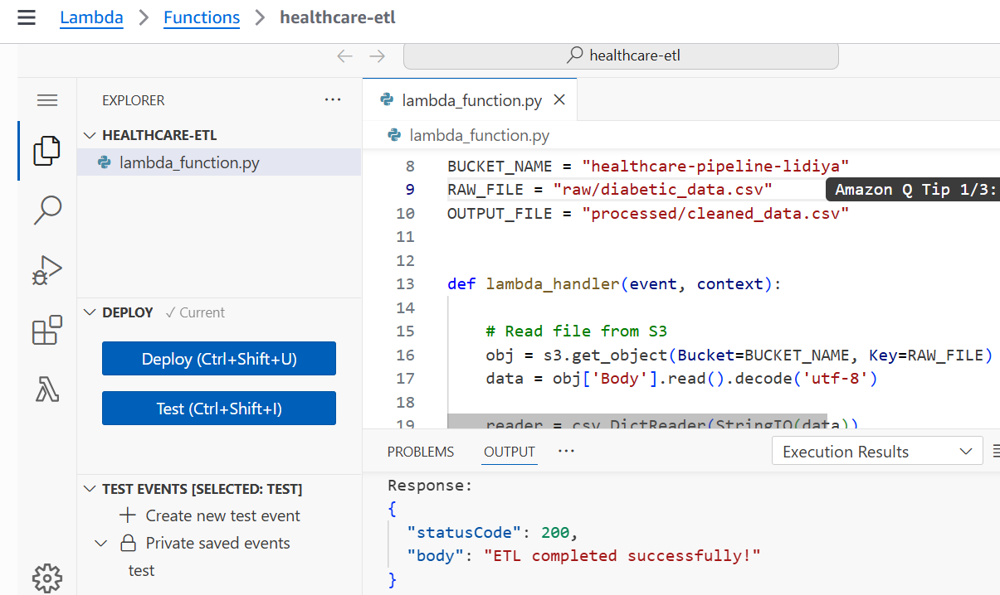
This project implements a cloud-based ETL (Extract, Transform, Load) pipeline for a healthcare dataset containing diabetic patient records. The pipeline automates the cleaning, transformation, and storage of raw data, preparing it for downstream analysis or predictive modeling of hospital readmission risk.
The system reads raw CSV data from AWS S3, processes it using serverless AWS Lambda functions, performs data cleaning operations including handling missing values, removing duplicates, converting data types, and writes the processed output back to S3. AWS Athena is then used for querying and validating the processed dataset, enabling easy access for data scientists and BI tools.
The pipeline is designed to be scalable, secure, and modular, with memory optimization and error handling implemented to handle large datasets. It provides a foundation for further predictive modeling or business intelligence reporting in a healthcare context.
Technologies Used: AWS S3, AWS Lambda, AWS Athena, Python, Pandas, Boto3
Outcome: Successfully built a fully automated ETL pipeline in the AWS cloud that transforms raw healthcare data into a clean, analytics-ready format, ready for use in predictive modeling or reporting dashboards.
Personal Portfolio Website
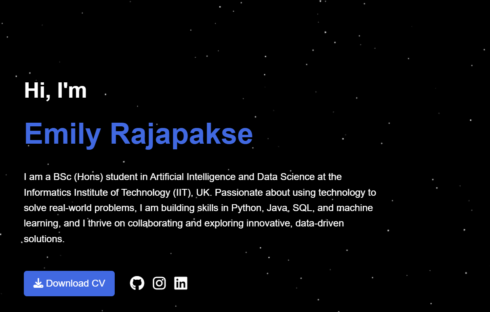
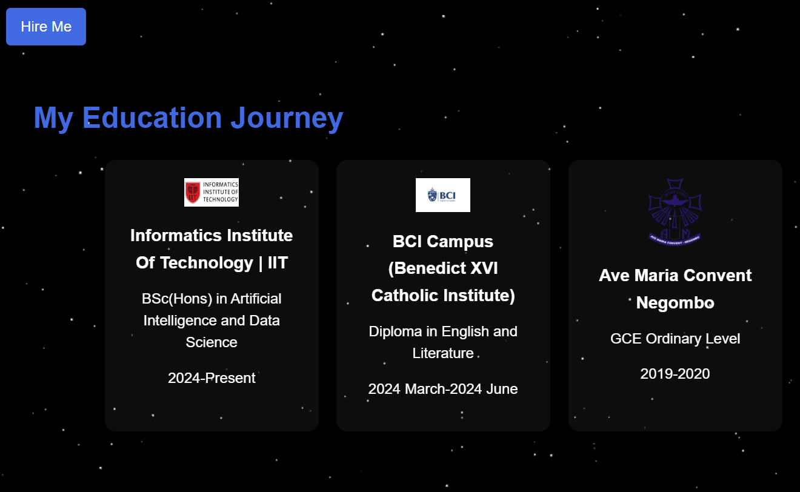
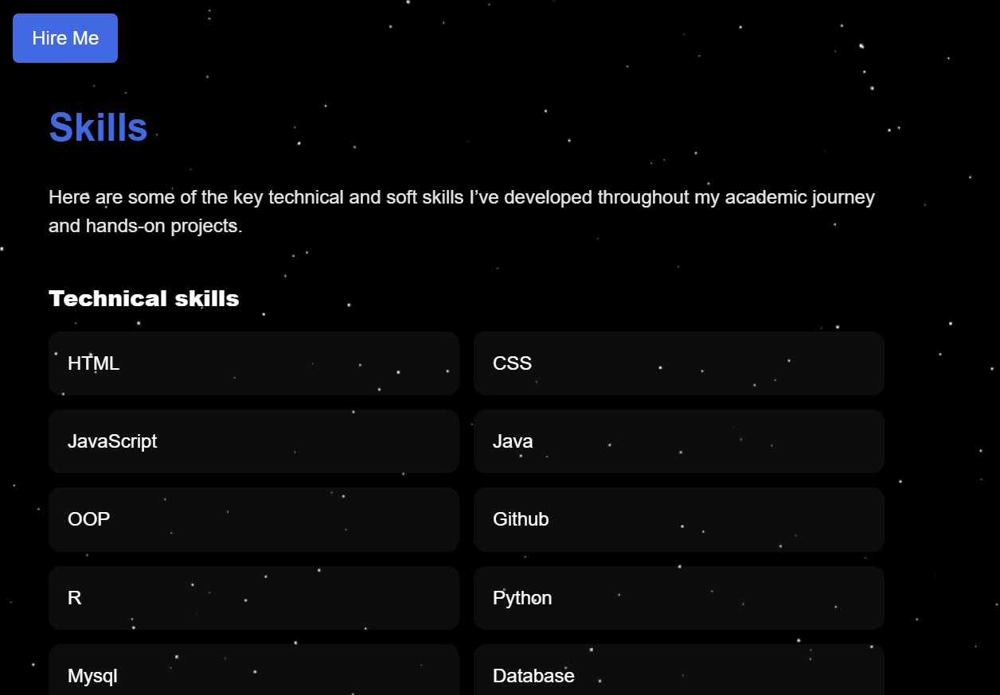
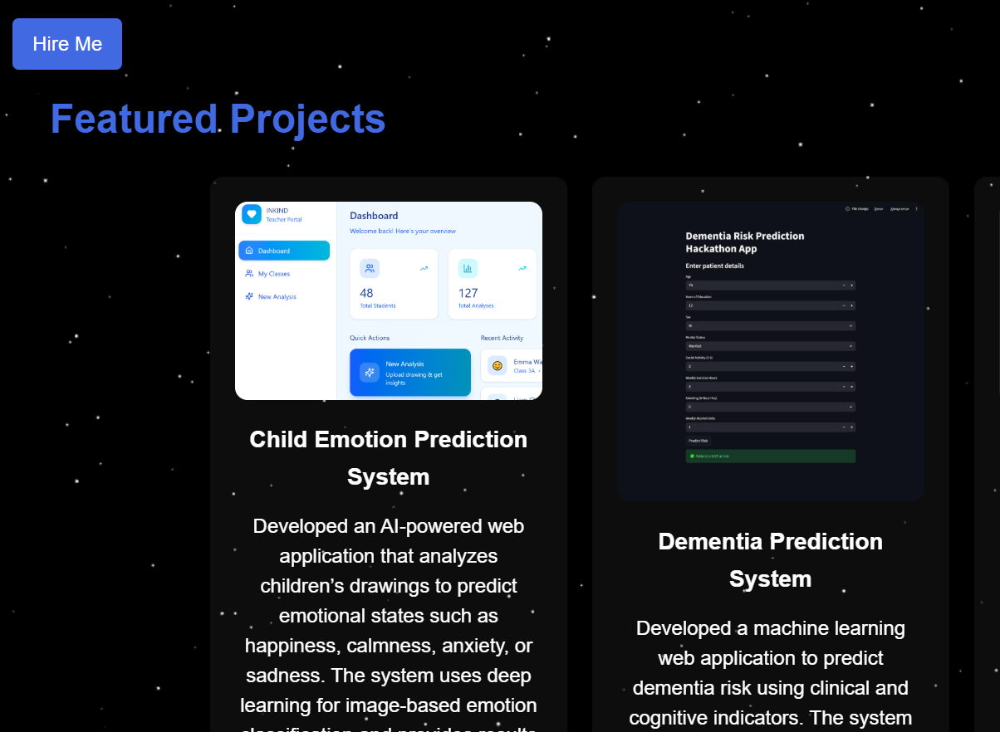
Designed and developed a responsive personal portfolio website to showcase projects, skills, volunteering roles, and achievements. The website includes interactive sections, animations, and a structured project gallery to present technical work and experiences.
Technologies Used: HTML, CSS, JavaScript
Outcome: Created a professional online portfolio to present projects, technical skills, and achievements to recruiters and collaborators.
Restaurant Menu Website
Developed a responsive restaurant menu website featuring interactive navigation and dynamic content rendering. The project involved designing a user-friendly interface and implementing interactive features using JavaScript to enhance user experience. Menu items were organized with filtering functionality for categories such as appetizers, mains, desserts, and beverages using DOM manipulation. An order form with multiple input fields and custom JavaScript validation was created to simulate a real ordering experience. The website also integrated an XML file containing reviews, ingredients, prices, and descriptions, which were dynamically displayed using JavaScript.
Technologies Used: HTML, CSS, JavaScript, XML
Outcome: Successfully built a fully responsive and accessible restaurant website, ensuring W3C HTML validation and accessibility compliance through testing with tools such as WAVE and axe DevTools while applying UX/UI design principles for usability and visual consistency.
Hospital Management System Database
Designed and implemented a relational database system for Golden Valley Hospital as part of a Database Management Systems module. The project involved conducting requirement analysis based on a healthcare case study and designing a conceptual data model using an Enhanced Entity-Relationship Diagram (EERD). The model was then converted into a relational schema and normalized up to Third Normal Form (3NF) to reduce redundancy and maintain data integrity. The database was implemented using MySQL and phpMyAdmin, with SQL queries written for database creation, data insertion, and advanced data retrieval operations.
Technologies Used:MySQL, phpMyAdmin, SQL, Database Design
Outcome: Successfully developed a structured hospital database system with normalized tables and optimized queries, demonstrating practical skills in database design, normalization, and SQL-based data management.
AURA – Team-Based Adaptive Experience App (IX’25)
Designed a high-fidelity UX prototype for AURA, a conceptual mobile application created for the IEEE IX’25 competition. The project explores future human–technology interaction by presenting a platform that adapts to user emotions, accessibility needs, and interaction preferences. The system focuses on enhancing mindful well-being, intelligent team formation, and seamless collaboration across both physical and digital environments. The prototype emphasizes inclusive design principles and adaptive user interfaces to create a personalized and accessible experience for diverse users.
Technologies Used: Figma, UX/UI Design, Prototyping, Interaction Design
Outcome: Developed a comprehensive UX prototype demonstrating innovative concepts for future adaptive interfaces and collaborative digital experiences.
Point of Sale (POS) & Government Tax Department System (JFXGTDS)
Developed two interoperable software systems as part of a software development project: a Python-based Point of Sale (POS) system for a self-employed cake maker and a JavaFX-based Government Tax Department System designed to import, validate, and process tax files. The systems were designed using software engineering practices including flowcharts, class diagrams, and modular object-oriented programming principles. The project implemented checksum validation for structured text files such as CSV, TSV, JSON, and XML to ensure data integrity during file processing. A graphical user interface was developed using JavaFX following WIMP (Windows, Icons, Menus, Pointer) interaction principles to provide a user-friendly interface.
Technologies Used: Python, Java, JavaFX, OOP, JUnit, File Handling, Data Validation, GitHub
Outcome: Successfully built and tested two integrated systems demonstrating practical experience in object-oriented software development, GUI design, file validation, and collaborative version control using GitHub.
TeamMate – Team Formation System
Developed a Java-based object-oriented Team Formation System that collects participant survey data, classifies personality types, and generates balanced teams using a rule-based matching algorithm. The system supports manual data input as well as CSV file handling, employs multithreading to enhance performance, and incorporates robust exception handling to ensure stability and reliability.
Technologies Used: Java, OOP, Multithreading, CSV File Handling, Exception Handling
Outcome: Successfully created a system that automates team formation by analyzing personality data and ensures efficient, reliable, and balanced team assignments for academic or organizational settings.